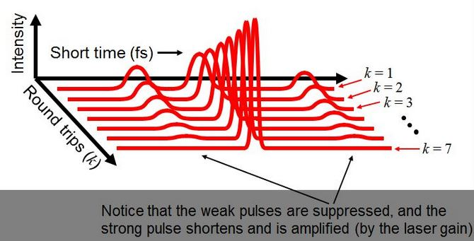
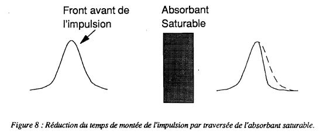

Ce laser à colorant travail en verrouillage de modes passif(mode locking). Pour cela j'utilise un laser pompe avec une durée de pulse la plus longue possible de manière à établir un minimum de 7 passages à travers l'absorbant saturable qui est de la Rhodamine B pour le colorant laser qui est du Disodium Fluoresceine ayant une largeur de gain de 60nm ( 50THz). Une bonne explication (en Anglais) est donnée sous ce lien:
La longueur du résonateur est de L=20cm ce qui donne C/2L= 751MHz 2L/C=1.33ns pour de la fluoresceine ayant une largeur de gain de 60nm on aura environ 66'500 modes longitudinaux dans la cavité laser.
Le couplage des modes se fait au moyen d'un absorbant saturable qui dans le cas présent est de la Rhodamine B. Avec le laser N2He de Lambda Physik la durée de pulse est de 10ns ce qui donne K=7 aller retour dans la cavité.

La cellule contenant l'absorbant saturable se compose d'une fenêtre d'entrée et d'un miroir plan aluminisé, monté sur un piston réglable au moyen d'une vis micrométrique permettant de d'ajuster l'épaisseur de colorant entre la fenêtre d'entrée et le miroir de manière à optimiser l'absorption pour obtenir le blocage de modes. Le colorant saturable circule dans cette cellule au moyen d'une petite pompe. Le colorant laser qui est de la fluoresceine circule dans un tube de silice avec une pompe de circulation et d'un filtre permettant d'éliminer les petites bulles. La partie la plus délicate sera de trouver la bonne concentration de fluoresceine de façon que le laser ne travaille pas en régime de super-radiance ! Pour cela je vais commencer avec une concentration de 1.10-7Mol et avec une défocalisation du laser pompe grâce au réglage de la distance entre la lentille plan-cylindrique et le tube contenant le colorant. J'ai prévu dans une première phase de travailler avec un diaphragme ayant un orifice de 1mm de diamètre pour fonctionner en mode TEM00. La durée de pulse minimum possible est t=0.441/N.v soit 9 fs !! En pratique cette durée minimum est plus grande ceci dû à la vitesse de transition de l'absorbant saturable et au nombre de passage dans l'absorbant saturable.
Malgré de nombreuses recherches effectuées dans ce domaine , il n'existe pas actuellement de théories complètes et satisfaisantes permettant d'expliquer correctement la formation des impulsions ultracourtes dans un laser à verrouillage de modes passif. Toutefois, je vais vous présenter une analyse très simplifiée du fonctionnement d'un laser femtoseconde constitué d'une cavité contenant un absorbant saturable et un milieu amplificateur. Cette approche a l'avantage de bien cerner les phénomènes présents dans ce type de laser. Analysons comment une impulsion peut naître dans ce type de cavité.
L'absorbant saturable présente initialement une transmission suffisamment faible pour empêcher tout effet laser. En raison des couplages existant obligatoirement dans la cavité entre les différents modes, il y a toujours des fluctuations d'intensité . Lorsqu'un pic de bruit est suffisamment intense pour saturer l'absorbant, un paquet de photons peut se propager dans la cavité. Cette impulsion longue est alors amplifiée dans le milieu à gain et va donc de nouveau saturer l'absorbant saturable. Lorsque l'impulsion arrive dans l'absorbant, celui-ci absorbe une partie de l'intensité incidente du front avant de l'impulsion et se sature. Une fois saturé, il met un certain temps TA pour retrouver son état d'équilibre. Si TA est supérieur à la durée de l'impulsion, la partie non absorbée de celle-ci traverse l'absorbant sans déformation . On constate que la traversée de l'absorbant saturable a raccourci le temps de montée de l'impulsion.

Le pompage s'effectuant en continu, le milieu amplificateur va également se saturer . En traversant le milieu amplificateur, le front avant de l'impulsion est amplifié. Le milieu amplificateur se sature progressivement et complètement si l'intensité de l'impulsion est suffisante. Comme il met un temps TG pour retrouver son gain initial, la queue de l'impulsion traverse le milieu amplificateur sans être amplifiée. Le temps de descente de l'impulsion est donc raccourci. Le bilan global de la traversée des deux milieux est une amplification et un raccourcissement de l'impulsion. Toutefois, ce raisonnement dépend de la façon dont se réalisent les saturations respectives de l'absorbant saturable et du milieu amplificateur. Pour amplifier le centre de l'impulsion, il faut que celui-ci traverse l'absorbant après qu'il se soit saturé et le milieu amplificateur avant la saturation. Ceci impose que le milieu absorbant se sature pour une énergie la plus faible que l'énergie de saturation du gain du milieu amplificateur. De plus, il est nécessaire que le gain de la cavité soit inférieur à 1 en dehors d'un créneau temporel contenant l'impulsion. Ces considérations fixent les paramètres physiques de la cavité. Nous avons vu comment se forment les impulsions dans la cavité et quels sont les processus permettant de réduire temporellement les impulsions. Toutefois, suivant l'analyse précédente, l'impulsion devrait continuer à se raccourcir de plus en plus sans atteindre un régime stationnaire. Nous allons montrer que d'autres phénomènes tels que l'automodulation de phase et la dispersion de vitesse de groupe doivent être pris en considération lorsque la durée des impulsions est de l'ordre de 200 à 300 fs.